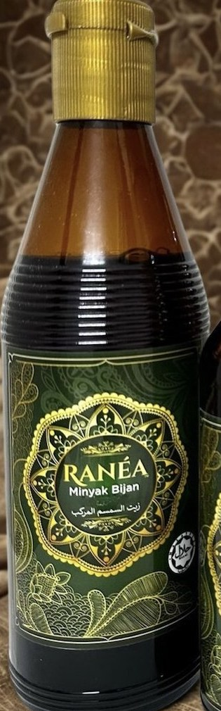
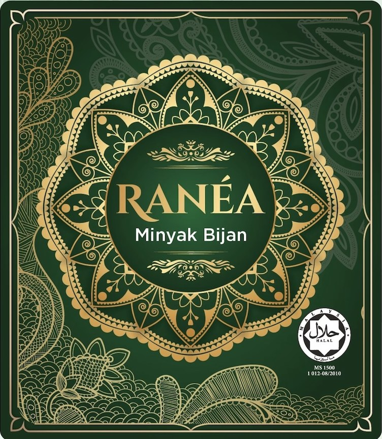
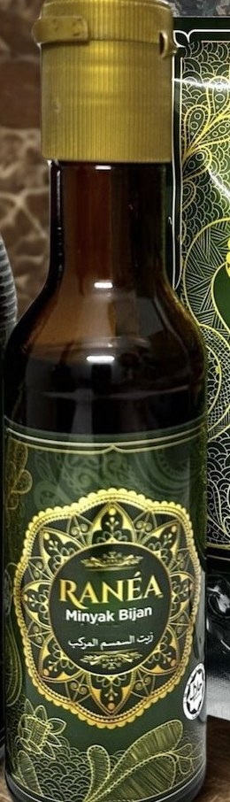
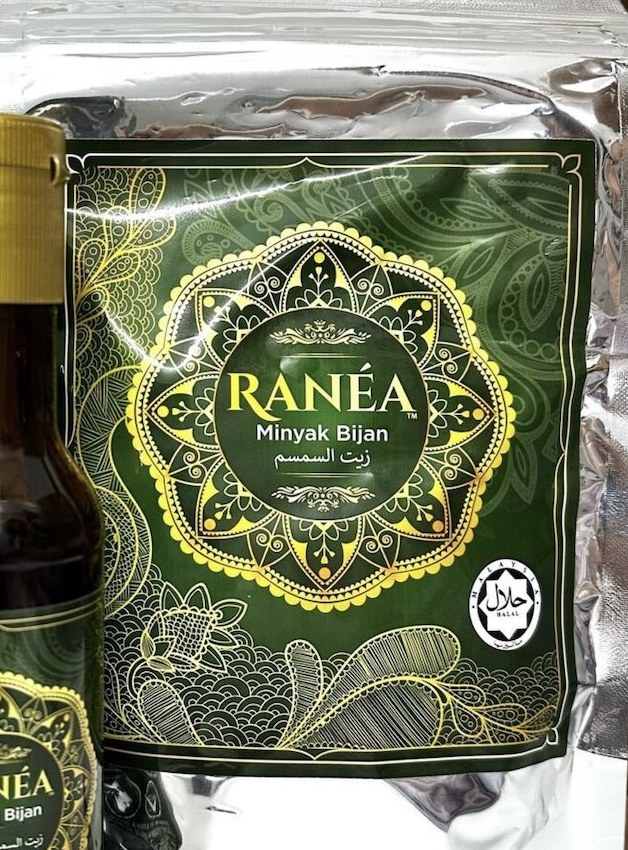

Minyak Bijan Tulen 300 ml
Botol keluarga untuk masakan harian.
Tanya harga di WhatsAppGhee Hiang & RANÉA, sejak 1856
Ghee Hiang telah diasaskan pada tahun 1856, sewaktu era kemuncak perlombongan bijih timah dan getah di Tanah Melayu. Berasal dari Fujian, China, seorang tukang pastri telah dijemput ke Pulau Pinang untuk memperkenalkan pastri tradisional Ghee Hiang.
Lihat produk kami
Minyak Bijan RANÉA dihasilkan untuk memenuhi keperluan keluarga moden dan pengusaha makanan, menggabungkan ketulenan, kemudahan dan harga mampu milik.
Minyak Bijan Tulen RANÉA dihasilkan daripada bijan berkualiti tinggi menggunakan kaedah tradisional bagi mengekalkan rasa asli dan khasiat semula jadi. Sesuai untuk masakan harian, pemakanan sihat, serta penggunaan dalam sektor makanan dan hospitaliti.

Botol keluarga untuk masakan harian.
Tanya harga di WhatsApp
Saiz padat untuk dapur kecil atau cubaan pertama.
Tanya harga di WhatsApp
Sekali hidang, praktikal untuk pelanggan moden dan sektor HORECA.
Tanya harga di WhatsAppBiskut coklat cip, kopi dan teh berinspirasi tradisional untuk citarasa moden.
Tanya harga di WhatsAppPembungkusan khas HORECA dan OEM disediakan atas permintaan.


Dari Fujian ke Pulau Pinang
Rangkaian produk Ghee Hiang merupakan sebahagian penting daripada warisan Pulau Pinang.
Ghee Hiang diasaskan sewaktu era kemuncak perlombongan bijih timah dan getah di Tanah Melayu, serta kemasukan besar-besaran imigran dari China.
Minyak Bijan Tulen Jenama Bayi Ghee Hiang mula diperkenalkan, menggunakan kaedah tradisional Fujian yang mengekalkan kualiti tinggi dan rasa yang kaya.
Minyak Bijan Jenama Bayi Ghee Hiang dipercayai secara meluas dan digunakan dalam isi rumah, industri makanan, restoran, dan hotel.
Dengan permintaan tinggi terhadap pengalaman kulinari yang lebih sihat dan premium, Minyak Bijan RANÉA dilancarkan untuk memenuhi keperluan masyarakat masa kini.
Kami berusaha mencapai kecemerlangan dan inovasi untuk membawa nama Ghee Hiang & Ranéa ke persada dunia melalui produk berkualiti, nilai warisan, daya saing, serta semangat untuk meneruskan legasi ini dari generasi ke generasi.

Kami komited untuk memenuhi dan melebihi jangkaan pelanggan dari segi kualiti, perkhidmatan, dan pilihan dengan memastikan semua produk kami adalah paling segar dan berkualiti tinggi setiap masa.
Produk kami diperakui ISO 22000:2005, mematuhi sistem HACCP, dan diiktiraf HALAL untuk jaminan kualiti dan keselamatan makanan.

Berikut adalah ringkasan manfaat minyak bijan yang disokong oleh kajian saintifik terkini:
Minyak bijan mengandungi lignan seperti sesamin dan sesamol, serta vitamin E, yang membantu menentang radikal bebas dan mengurangkan keradangan.
Kajian menunjukkan bahawa pengambilan minyak bijan secara berkala boleh menurunkan kadar kolesterol LDL dan trigliserida, serta meningkatkan kolesterol HDL, menyokong kesihatan jantung.
Pengambilan bijan telah dikaitkan dengan penurunan kadar glukosa darah puasa dan HbA1c, menunjukkan potensi dalam pengurusan diabetes jenis 2.
Sesamin dalam minyak bijan telah ditunjukkan dapat meningkatkan kepadatan mineral tulang dan mengurangkan risiko osteoporosis, terutamanya dalam wanita pascamenopause.
Aroma minyak bijan telah didapati dapat mengurangkan ekspresi gen yang berkaitan dengan tekanan, menunjukkan potensi dalam mengurangkan kebimbangan dan kemurungan.
Antioksidan dalam minyak bijan membantu melindungi kulit daripada kerosakan akibat sinaran UV, menjadikannya bahan semula jadi dalam produk pelindung matahari.
Minyak bijan mempunyai sifat antibakteria dan antikulat, membantu mengurangkan kelemumur dan melindungi kulit kepala, serta meningkatkan kesihatan rambut secara keseluruhan.
Manfaat-manfaat ini menunjukkan potensi minyak bijan sebagai tambahan yang berharga dalam diet harian untuk menyokong kesihatan keseluruhan. Namun, adalah penting untuk berunding dengan profesional kesihatan sebelum membuat perubahan besar dalam diet atau rejimen kesihatan anda.
Menggunakan minyak bijan dalam masakan tumis dapat merangsang selera anda dengan aroma bijan yang harum.
Cadangan penggunaan
Menggunakan minyak bijan untuk makanan bakar menambahkan kilauan pada permukaan makanan dan meningkatkan rasa dengan ketara.
Cadangan penggunaan
Gabungkan minyak bijan dengan kicap soya, cuka beras, madu dan bawang putih untuk menghasilkan sos atau perapan berinspirasikan Asia.
Pilih bahan yang ada di dapur anda. Kami cadangkan hidangan yang boleh dimasak dengan Ranéa.
Sokongan kajian saintifik
Pelbagai kajian saintifik telah mengesahkan manfaat minyak bijan untuk kesihatan jantung, kawalan gula darah, kesihatan tulang, perlindungan kulit, dan banyak lagi.
Jurnal-jurnal terkemuka seperti Nature, ScienceDirect, dan MDPI telah menerbitkan kajian yang menunjukkan keberkesanan minyak bijan dalam pelbagai aspek kesihatan.